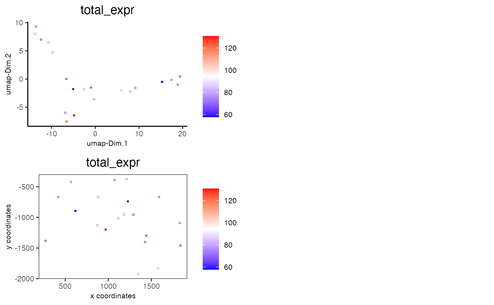
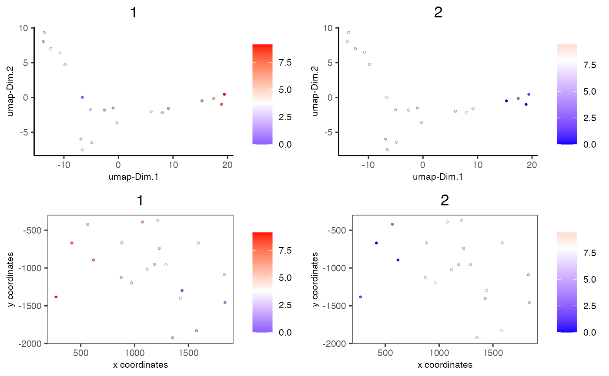
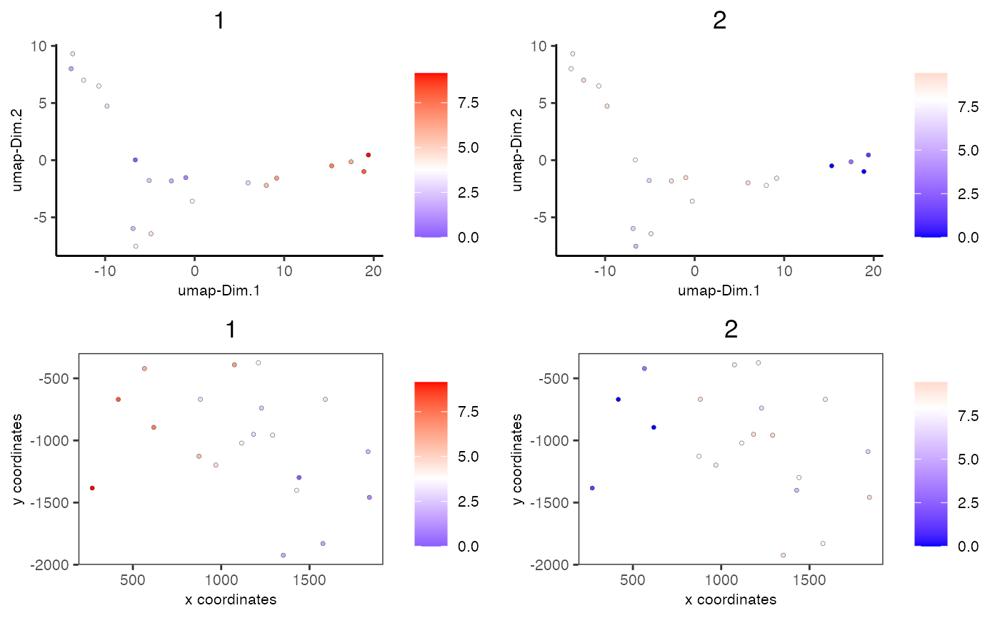

Visualize numerical features of cells according to spatial AND dimension reduction coordinates in 2D
spatDimCellPlot2D( gobject, show_image = F, gimage = NULL, image_name = "image", plot_alignment = c("vertical", "horizontal"), spat_enr_names = NULL, cell_annotation_values = NULL, dim_reduction_to_use = "umap", dim_reduction_name = "umap", dim1_to_use = 1, dim2_to_use = 2, sdimx = "sdimx", sdimy = "sdimy", cell_color_gradient = c("blue", "white", "red"), gradient_midpoint = NULL, gradient_limits = NULL, select_cell_groups = NULL, select_cells = NULL, dim_point_shape = c("border", "no_border"), dim_point_size = 1, dim_point_alpha = 1, dim_point_border_col = "black", dim_point_border_stroke = 0.1, spat_point_shape = c("border", "no_border", "voronoi"), spat_point_size = 1, spat_point_alpha = 1, spat_point_border_col = "black", spat_point_border_stroke = 0.1, dim_show_cluster_center = F, dim_show_center_label = T, dim_center_point_size = 4, dim_center_point_border_col = "black", dim_center_point_border_stroke = 0.1, dim_label_size = 4, dim_label_fontface = "bold", spat_show_cluster_center = F, spat_show_center_label = F, spat_center_point_size = 4, spat_center_point_border_col = "black", spat_center_point_border_stroke = 0.1, spat_label_size = 4, spat_label_fontface = "bold", show_NN_network = F, nn_network_to_use = "sNN", nn_network_name = "sNN.pca", dim_edge_alpha = 0.5, spat_show_network = F, spatial_network_name = "Delaunay_network", spat_network_color = "red", spat_network_alpha = 0.5, spat_show_grid = F, spatial_grid_name = "spatial_grid", spat_grid_color = "green", show_other_cells = TRUE, other_cell_color = "grey", dim_other_point_size = 0.5, spat_other_point_size = 0.5, spat_other_cells_alpha = 0.5, show_legend = T, legend_text = 8, legend_symbol_size = 1, dim_background_color = "white", spat_background_color = "white", vor_border_color = "white", vor_max_radius = 200, vor_alpha = 1, axis_text = 8, axis_title = 8, coord_fix_ratio = NULL, cow_n_col = 2, cow_rel_h = 1, cow_rel_w = 1, cow_align = "h", show_plot = NA, return_plot = NA, save_plot = NA, save_param = list(), default_save_name = "spatDimCellPlot2D" )
Arguments
| gobject | giotto object |
|---|---|
| show_image | show a tissue background image |
| gimage | a giotto image |
| image_name | name of a giotto image |
| plot_alignment | direction to align plot |
| spat_enr_names | names of spatial enrichment results to include |
| cell_annotation_values | numeric cell annotation columns |
| dim_reduction_to_use | dimension reduction to use |
| dim_reduction_name | dimension reduction name |
| dim1_to_use | dimension to use on x-axis |
| dim2_to_use | dimension to use on y-axis |
| sdimx | = spatial dimension to use on x-axis |
| sdimy | = spatial dimension to use on y-axis |
| cell_color_gradient | vector with 3 colors for numeric data |
| gradient_midpoint | midpoint for color gradient |
| gradient_limits | vector with lower and upper limits |
| select_cell_groups | select subset of cells/clusters based on cell_color parameter |
| select_cells | select subset of cells based on cell IDs |
| dim_point_shape | dim reduction points with border or not (border or no_border) |
| dim_point_size | size of points in dim. reduction space |
| dim_point_alpha | transparancy of dim. reduction points |
| dim_point_border_col | border color of points in dim. reduction space |
| dim_point_border_stroke | border stroke of points in dim. reduction space |
| spat_point_shape | shape of points (border, no_border or voronoi) |
| spat_point_size | size of spatial points |
| spat_point_alpha | transparancy of spatial points |
| spat_point_border_col | border color of spatial points |
| spat_point_border_stroke | border stroke of spatial points |
| dim_show_cluster_center | show the center of each cluster |
| dim_show_center_label | provide a label for each cluster |
| dim_center_point_size | size of the center point |
| dim_center_point_border_col | border color of center point |
| dim_center_point_border_stroke | stroke size of center point |
| dim_label_size | size of the center label |
| dim_label_fontface | font of the center label |
| spat_show_cluster_center | show the center of each cluster |
| spat_show_center_label | provide a label for each cluster |
| spat_center_point_size | size of the spatial center points |
| spat_center_point_border_col | border color of the spatial center points |
| spat_center_point_border_stroke | stroke size of the spatial center points |
| spat_label_size | size of the center label |
| spat_label_fontface | font of the center label |
| show_NN_network | show underlying NN network |
| nn_network_to_use | type of NN network to use (kNN vs sNN) |
| nn_network_name | name of NN network to use, if show_NN_network = TRUE |
| dim_edge_alpha | column to use for alpha of the edges |
| spat_show_network | show spatial network |
| spatial_network_name | name of spatial network to use |
| spat_network_color | color of spatial network |
| spat_network_alpha | alpha of spatial network |
| spat_show_grid | show spatial grid |
| spatial_grid_name | name of spatial grid to use |
| spat_grid_color | color of spatial grid |
| show_other_cells | display not selected cells |
| other_cell_color | color of not selected cells |
| dim_other_point_size | size of not selected dim cells |
| spat_other_point_size | size of not selected spat cells |
| spat_other_cells_alpha | alpha of not selected spat cells |
| show_legend | show legend |
| legend_text | size of legend text |
| legend_symbol_size | size of legend symbols |
| dim_background_color | background color of points in dim. reduction space |
| spat_background_color | background color of spatial points |
| vor_border_color | border colorr for voronoi plot |
| vor_max_radius | maximum radius for voronoi 'cells' |
| vor_alpha | transparancy of voronoi 'cells' |
| axis_text | size of axis text |
| axis_title | size of axis title |
| coord_fix_ratio | ratio for coordinates |
| cow_n_col | cowplot param: how many columns |
| cow_rel_h | cowplot param: relative height |
| cow_rel_w | cowplot param: relative width |
| cow_align | cowplot param: how to align |
| show_plot | show plot |
| return_plot | return ggplot object |
| save_plot | directly save the plot [boolean] |
| save_param | list of saving parameters, see |
| default_save_name | default save name for saving, don't change, change save_name in save_param |
Value
ggplot
Details
Description of parameters.
See also
Other spatial and dimension reduction cell annotation visualizations:
spatDimCellPlot()
Examples
data(mini_giotto_single_cell) # combine all metadata combineMetadata(mini_giotto_single_cell, spat_enr_names = 'cluster_metagene')#> cell_ID nr_genes perc_genes total_expr leiden_clus cell_types sdimx #> 1: cell_2 13 65 111.98320 3 cell C 1589.47 #> 2: cell_7 15 75 115.73030 3 cell C 1291.34 #> 3: cell_12 11 55 95.49802 1 cell A 1183.07 #> 4: cell_15 12 60 99.94782 3 cell C 1115.86 #> 5: cell_17 13 65 111.32963 2 cell B 1074.92 #> 6: cell_30 11 55 96.64302 3 cell C 882.00 #> 7: cell_37 6 30 57.77777 2 cell B 618.20 #> 8: cell_40 9 45 82.84693 2 cell B 565.40 #> 9: cell_44 9 45 79.93838 2 cell B 417.40 #> 10: cell_53 9 45 82.40747 1 cell A 1831.19 #> 11: cell_64 8 40 73.06345 1 cell A 1839.07 #> 12: cell_74 11 55 93.04295 3 cell C 1575.84 #> 13: cell_85 8 40 73.72574 1 cell A 1440.75 #> 14: cell_86 14 70 115.75186 1 cell A 1427.06 #> 15: cell_90 11 55 93.02181 1 cell A 1351.50 #> 16: cell_95 6 30 59.55714 1 cell A 1228.13 #> 17: cell_96 10 50 88.31757 1 cell A 1210.65 #> 18: cell_107 16 80 130.62640 1 cell A 969.60 #> 19: cell_113 12 60 99.83100 2 cell B 874.30 #> 20: cell_118 14 70 117.63523 2 cell B 270.00 #> sdimy 1 2 3 #> 1: -669.51 3.144429 8.617638 5.853656 #> 2: -957.71 4.088076 9.410168 4.427447 #> 3: -950.97 2.899783 9.264667 2.785292 #> 4: -1021.40 4.058155 7.842009 3.405087 #> 5: -391.16 6.413588 7.374390 2.629099 #> 6: -668.36 2.989329 9.298030 2.823368 #> 7: -894.70 7.222222 0.000000 0.000000 #> 8: -421.27 5.933558 3.031319 2.865092 #> 9: -669.71 8.067155 0.000000 2.566856 #> 10: -1090.20 2.183105 6.374428 4.449344 #> 11: -1458.00 0.985555 9.382938 1.480231 #> 12: -1829.60 1.715689 8.215992 5.003582 #> 13: -1298.30 0.000000 7.914246 4.373377 #> 14: -1401.00 3.790383 5.580052 8.658080 #> 15: -1923.80 1.839913 9.190628 3.859789 #> 16: -739.38 2.523159 6.561978 0.000000 #> 17: -374.81 3.737206 8.241875 1.494778 #> 18: -1198.50 4.579634 8.674903 6.989984 #> 19: -1127.00 5.564253 7.927811 1.291685 #> 20: -1383.30 9.142231 1.263504 6.152727# visualize total expression information spatDimCellPlot2D(mini_giotto_single_cell, cell_annotation_values = 'total_expr')# visualize enrichment results spatDimCellPlot2D(mini_giotto_single_cell, spat_enr_names = 'cluster_metagene', cell_annotation_values = c('1','2'))